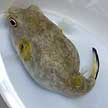
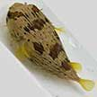
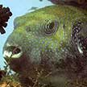
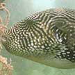
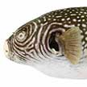
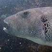

|
|
| fishes text index | photo index |
| Phylum Chordata > Subphylum Vertebrate > fishes |
| Photo
index of fishes on Singapore shores Globular and boxy fishes, and fishes that look like stones |
| 6-10cm to 18cm. Globular body, well camouflaged. Coral rubble and reefs. Sometimes seen on some of our Southern shores. | 6-10cm. Globular body, all black with pale lure. Some have sandy-coloured markings. Coral rubble and reefs. Sometimes seen on some of our Southern shores. | 10cm, grows to 17cm. Has a pair of small spines on the upper jaw in front of the eyes that curves forward. Coral rubble. Sometimes seen on some of our shores. | 15-30cm. Small eyes, tiny depression near the eyes, horizontal mouth. Coral rubble. Sometimes seen on some of our shores. | 15-20cm, grows to 30-40cm. A bony ridge between the small eyes, hollow 'cheeks', downturned mouth, stout dorsal spines. Coral rubble. Sometimes seen on our Southern shores. HIGHLY DANGEROUS. |
| 15-30cm. Smooth body. Eyes and mouth at the top of the head facing upwards. Entire fish usually buried in sandy areas near seagrasses. Sometimes seen on our Northern shores. | 10-20cm, grows to 30cm. Round head, small body, well camouflaged. Under stones and among coral rubble. Common on many of our shores. | 5-7cm. Dorsal fin begins above eyes, no flaps over the nose. A pair of large backward pointing spines above mouth. Coral rubble and seagrasses. Commonly seen on many of our shores. | 4-10cm. Fringed flaps over nostrils, no spines at the mouth, dorsal fin stars well after the eyes. It is NOT a true scorpionfish. Coral rubble. Commonly seen on some of our shores. | |
| 4cm, to 45cm. Cubical body, yellow without horns. Among seagrasses. Seen once on Pulau Sekudu. | To 30 cm. Cubical body, without horns. Hexagonal body pattern with brown spots. Seen once on Cyrene Reefs. | 10cm, grows to 40cm. Boxy body, a pair of 'horns' above the eyes. Among seagrassess. Sometimes seen on some of our shores. | ||
 Yellow eye pufferfish Arothron immaculatus |
 Porcupinefish Family Diodontidae |
|||
| 8-12cm, grows to 30cm. Smooth body. When uninflated, oval shaped. Coral rubble near reefs. Sometimes seen on some of our shores. | 3-6cm, grows to 14cm. A green back with black spots. The tail fin has dark bars. Sometimes seen in our mangroves. | 8-10cm. Body plain without markings, tail fin yellowish with a dark brown rim. Sometimes, the eyes are yellow. Living reefs and seagrasses. Sometimes seen on our Southern shores. | 15-50cm. Body covered with sharp spines. Seldom seen on our shores. | |
 Blue-spotted pufferfish Arothron caeruleopunctatus |
 Map pufferfish Arothron mappa |
 Reticulated pufferfish Arothron reticularis |
 Starry pufferfish Arothron stellatus |
|
| 80cm. Blue lines circle the eye. Rarely seen. | 60cm. Pale and dark streaks radiating from the eye. Sometimes seen on our Southern shores. | 45cm. Dark and pale lines circle the eye. Rarely seen. | 50cm to 1m. Black spots around the eye. Rarely seen. |


| how to tell apart fishes that look like stones |
photo
index of
fishes on this site
|